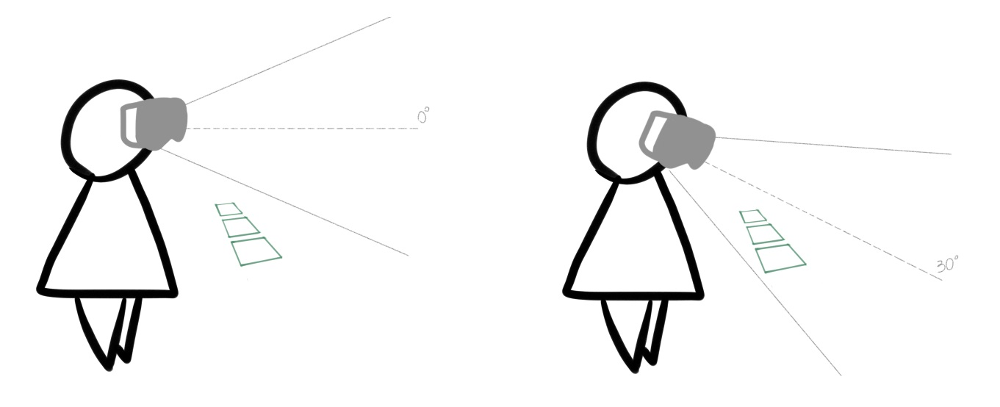

Designing the User Experience of VR Job Training
Worked within the Future Experiences team as a Unity developer, I focused on improving the UI and modifying 3D assets to enhance the immersive experience.
When I first come into the project, the UI was quite messy. Since the target platform of this application was Augmented Reality, the UI was originally designed to ensure that key information is always visible to the user. The list of steps and coffee orders is overlaid on top of the user's view as follows:
Therefore, I suggested that we should remove all overlaid information and display them elsewhere.
Order accuracy is one of the main requirement of this application. So we need a different location to put the orders. I proposed a solution: place the orders panel on an "invisible belt" that straps onto the user, so it moves along with the player and the player can review the orders simplyby looking downwards.
I made a quick prototype and moved the panel to the user's virtual body, with position and rotation relative to the user's headset (CameraRig). So the player can move and turn around freely, with the panel just slightly below their line of sight, but still within their peripheral vision.
We tested different settings for the position, angle, size of the orders panel. The final design is demonstrated below: